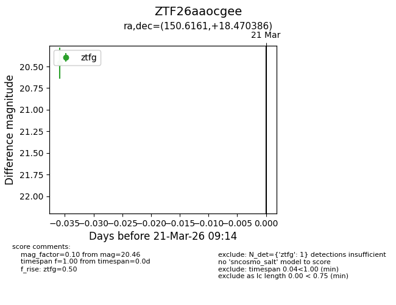
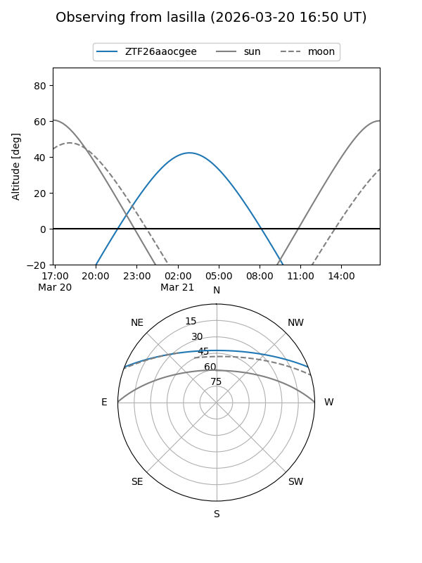
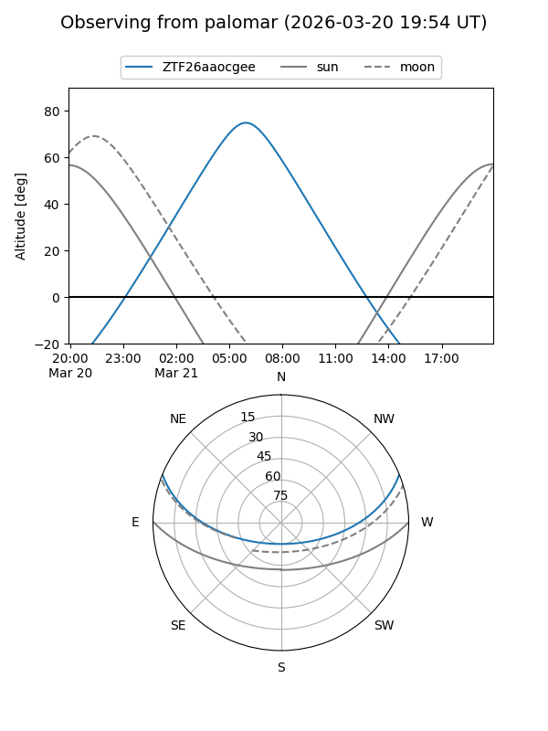

ZTF26aaocgee
Target ZTF26aaocgee at 2026-03-21 09:16
Aliases and brokers:
FINK: link
Lasair: link
ALeRCE: link
alt names
ZTF26aaocgee (ztf,fink_ztf)
Coordinates:
equatorial (ra, dec) = 150.6161,+18.47039
equatorial (HMS+DMS) = 10:02:27.86,+18:28:13.39
galactic (l, b) = (216.3614,+50.29799)
Flags:
Photometry:
last ztfg=20.46
1 ztfg detections
Lightcurve

Visibility


Additional plots